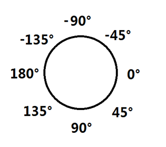
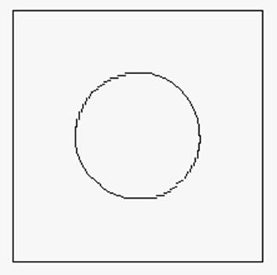
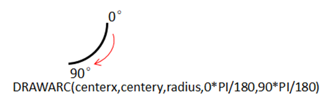
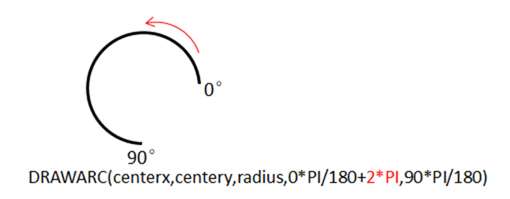

|
类型 |
显示指令 |
|
描述 |
画圆弧。 此指令只能在自定义元件的绘图函数内使用，请查看自定义元件调用函数参考例程。 |
|
语法 |
DRAWARC(centx, centy, radius, startangle, endangle) centx, centy：圆心的位置 radius：半径 startangle：起始角度，弧度单位（公式：弧度=角度*PI/180） endangle：结束角度，弧度单位
绘制的角度说明：  从起始角度向结束角度绘制圆弧： 若起始角度<结束角度：顺时针绘制圆弧 若起始角度>结束角度：逆时针绘制圆弧 |
|
适用控制器 |
支持RTHmi |
|
例子 |
例一：画整圆 DRAWRECT(0,0,200,200) '自定义元件内绘制边框 DRAWARC (100,100,50,0,PI*2) '画一个整圆 
例二：画圆弧  例三：需要绘制优弧段时，在起始角度和结束角度二者中，角度小的那个加上2*pi。  |
|
相关指令 |